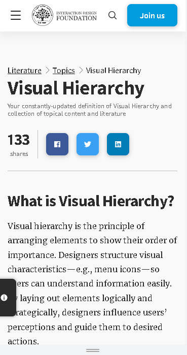

Visual Hierarchy
Interaction Design Foundation
InteractionDesignFoundation.com
What is Visual Hierarchy? Visual hierarchy is the principle of arranging elements to show their order of importance. Designers structure visual characteristics—e.g., menu icons—so users can understand information easily. By laying out elements logically and strategically, designers influence users’ perceptions and guide them to desired actions.
Fitts's Law
NN group
NNGroup.comPaul Fitts was one of the first psychologists who understood that human error is attributable to poor design as opposed to just human fallacy. He studied airplane-cockpit design during World War II and argued that many losses that had been attributed to human error were, in fact, due to poor design.
Rule of Thirds
Adobe
Adobe.comThe rule of thirds is a composition guideline that places your subject in the left or right third of an image, leaving the other two thirds more open. While there are other forms of composition, the rule of thirds generally leads to compelling and well-composed shots.